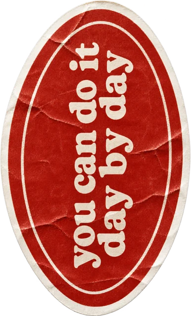
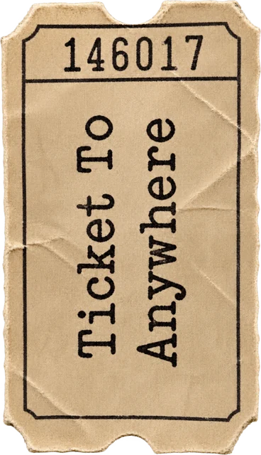

All 10 of your stickers on every notebook. Tap any sticker to peel it up. Replay to watch them stick again. Move your mouse or tilt your phone and the book moves with you.


Kraft cover, logo in the middle, stickers all around it. Closest to the inspo.
Soft linen cover, logo on torn paper at the top, stickers cascading down.
Sage dotted cover, soft and calm.
Dusty blue cloth cover, logo top left like a school label.
Your current marble idea, softened to taupe and cream.
Cream spiral notebook, like one you'd actually carry around.
Butter yellow stitched cover, logo low down, stickers on top.
"Note to self" written on the left page, all your stickers covering the right.
Card cover, torn paper logo off to the right. Most keepsake.
Big logo in the middle, smaller stickers framing the edges. The logo stands out most here.